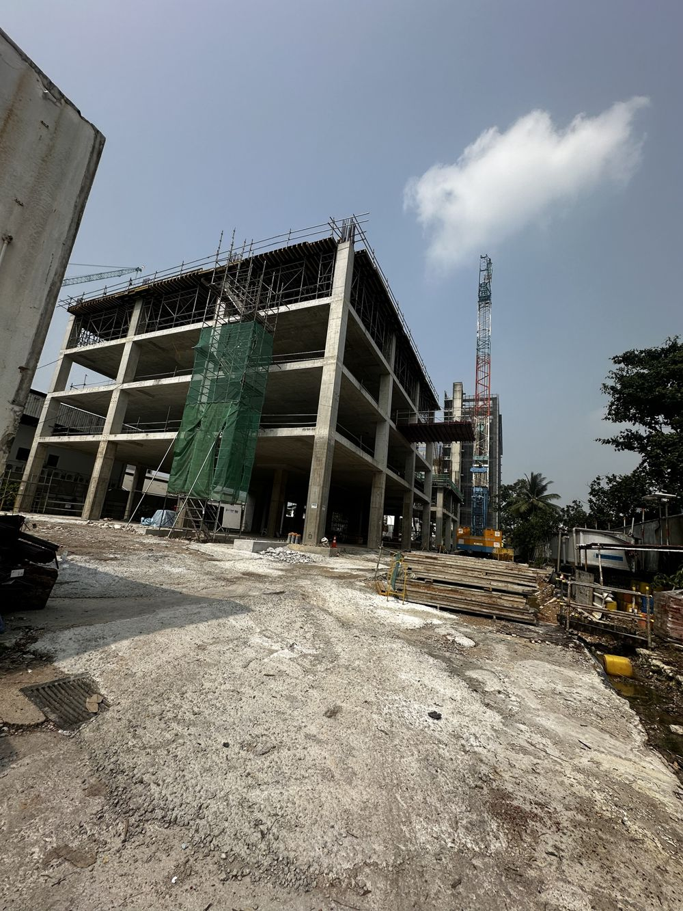
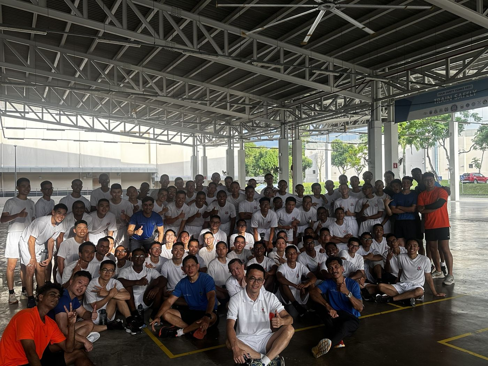
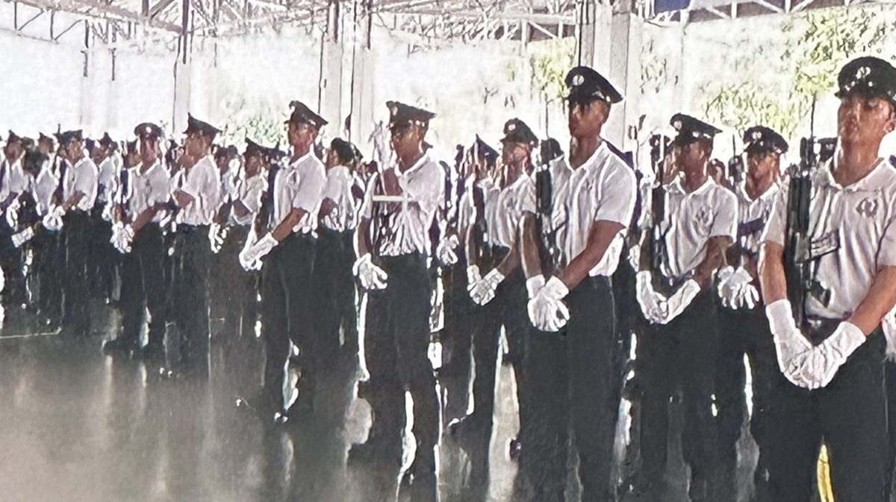
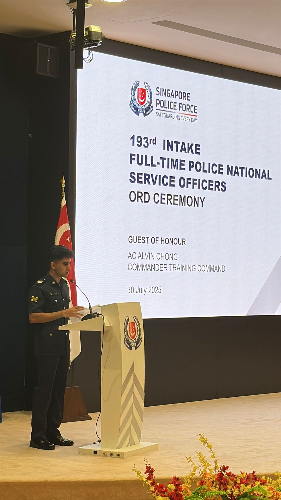

Experience
Most recent first.
- Jan to Apr 2027Confirmed
Business development intern
Shopee SPX Express, Singapore
- Joining the parcel locker project team
- Nov 2026
Marketing intern
dsm-firmenich, Shanghai and Guangzhou
- Researched fragrance trends to anticipate where scent preferences and market positions are heading
- Assessed potential new markets to enter, reviewing the financials to test whether each would work, then built and presented the findings to the marketing manager
- Took part in all candle and perfume testing with the FDM team, including candle burn and scent profile tests, and triangle testing to check whether two scents are perceptibly different
- Learned how scent requirements differ by market through joint evaluations, for example a more vanilla profile for the US and spicier, oud-led profiles for the Middle East
- Joined a client visit from Shanghai to Yiwu and sat in on meetings with the head of innovation and business development, learning how the company balances development cost against profitability
- Trained on the Siemens system for chamber ventilation management
- 2026
Project management and design engineering intern
Ekosys, construction management
- Wrote the firm's Design Management Manual and Project Management Manual in line with ISO 9001, turning working practice into documented procedure
- Rebuilt the Excel defect tracker, cutting logging time from 1 min to 20 s per defect, which made site teams far less reluctant to record defects
- Worked on MEP design and day-to-day project coordination, including settling disagreements between parties on site

The site I worked on - Feb 2026 to now
Vice president, elected
SUTD Football Club
- Handle venue risk assessments, bookings and fixtures
- Liaise with the Office of Student Life, coach, referees and other teams
- Secured new goalposts beyond the club's allocated seed funding
- Oct 2023 to Aug 2025
Field instructor, Sergeant 2
Singapore Police Force, Training Command
- Trained 160+ officers in fitness and drill, across Senior Officer Trainees, Junior Officer Trainees and Ground Response Force officers
- Took 79 Senior Officer Trainees through their nine-month course on my own, balancing standards with welfare
- Squad reached 80%+ IPPT Gold
- Selected to give the ORD ceremony speech

Fitness training 
Drill 
ORD ceremony speech - 2019 to now
Sales executive and e-commerce lead
Fragrance Castle Singapore, developed with my family
- Manage 200+ SKUs across six brands, coordinating stock and lead times with our supplier in Dubai
- Set up and run the Shopee, Lazada and Shopify storefronts
- Grew the wholesaler base by 60% through direct prospecting
- Built SwiftPack to cut packing time, and now exploring warehouse automation. Read more
What I took from dsm-firmenich
- Client work is about connection more than selling. DSM's orders grow only when its clients grow.
- Presentations were formal and information-dense, while everyday interaction stayed relaxed and polite.
- Communication is indirect. You set context first and then make the point, because being blunt can come across as harsh.
- Innovation and market acceptance are different things, and I learned to tell them apart.
- A whole office came together once to smell fragrances, which showed me how much passion sits behind the work.